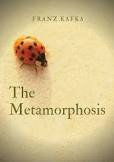

Assignment 4.2: Build a Web Page Exercise - Part 4
A Child Called It
(author: Dave Pelzer)
The Metamorphosis

(author: Franz Kafka)
The Butterfly Effect
(author: Edward D. Melillo)
return to landing page